Proyecto: SecureVault Pro
Repositorio: https://github.com/johngutierrez80/Securevault-pro
Fecha de analisis: 18 de abril de 2026
Version del documento: 1.0
Tipo de entrega: Guia explicativa academica con enfoque DevSecOps
Titulo completo:
SecureVault Pro: Arquitectura, Politicas de Seguridad, Herramientas DevSecOps y Analisis Profundo de Implementacion
Descripcion:
Este documento presenta un analisis tecnico y pedagogico del proyecto SecureVault Pro, explicando en detalle la arquitectura de microservicios, el rol de cada modulo, las politicas de seguridad aplicadas y la forma en que las herramientas DevSecOps vigilan y refuerzan la proteccion del sistema a lo largo de todo el ciclo de vida del software.
Publico objetivo:
- Lectores academicos (especializacion en ciberseguridad y DevSecOps)
- Evaluadores tecnicos
- Equipos de desarrollo que busquen referencia de buenas practicas
SecureVault Pro es una plataforma para gestion segura de secretos construida como laboratorio real de DevSecOps. El proyecto integra microservicios en Python/FastAPI, frontend en React/Vite, datos en PostgreSQL, eventos y control de tasa con Redis, enrutamiento por Nginx, despliegue contenerizado, pipeline CI/CD con multiples controles de seguridad y una capa operativa de observabilidad y deteccion de amenazas.
El alcance de esta guia cubre:
El analisis se construye sobre evidencia directa del repositorio:
docs/.docker-compose.yml y docker-compose.prod.yml.ci-devsecops.yml, dast-zap.yml, container-release.yml y deploy-production.yml.trunk.yaml y archivos de configuracion de linters asociados.monitoring/.servicios/.frontend-spa/.threat-model/.Enfoque pedagogico aplicado en cada seccion:
El sistema actua como una boveda digital: el usuario entra por una unica puerta (Gateway), se autentica (Auth Service), guarda y consulta secretos cifrados (Vault Service), y tareas de fondo como expiracion o eventos se procesan sin bloquear la aplicacion principal (Worker). Todo ocurre bajo vigilancia de herramientas de seguridad y monitoreo.
Funcion principal:
Interfaz de usuario para registro, login y gestion de secretos.
Herramientas usadas:
- React para componentes y estado.
- Vite para build rapido y empaquetado.
- Nginx para servir archivos estaticos en el contenedor frontend.
Implementacion en el repositorio:
- Carpeta frontend-spa/.
- Flujo de login en frontend-spa/src/pages/LoginPage.jsx.
- El token se guarda en localStorage tras autenticacion exitosa.
Politicas de seguridad relacionadas: - Control de acceso basado en token JWT. - Riesgo documentado por almacenamiento de token en localStorage.
Explicacion educativa profunda:
El frontend es la capa de atencion al usuario, no el lugar donde vive la seguridad central. Su rol es solicitar credenciales y consumir APIs protegidas. Cuando guarda un token en localStorage, obtiene simplicidad de implementacion, pero aumenta exposicion ante XSS. Por eso la seguridad real se mantiene en backend con validaciones y expiracion de tokens.
Captura sugerida:
- Vista de frontend-spa/ y frontend-spa/src/pages/LoginPage.jsx.
- Guardar como docs/assets/capturas/01_frontend_login.png.
Funcion principal:
Registro, login y emision de JWT.
Herramientas usadas:
- FastAPI para API REST.
- passlib/bcrypt para hash de contraseñas.
- PyJWT para firma y validacion de tokens.
- SQLAlchemy para persistencia en PostgreSQL.
Implementacion en el repositorio:
- servicios/auth-service/app/core/security.py: hash y verificacion bcrypt.
- servicios/auth-service/app/utils/jwt.py: creacion y verificacion de token con expiracion.
- servicios/auth-service/app/routers/auth.py: endpoints register y login.
Politicas de seguridad relacionadas: - No almacenar contraseñas en texto plano. - Tokens firmados y con expiracion. - Autenticacion centralizada.
Explicacion educativa profunda:
Este servicio es el control de identidad del sistema. La contrasena nunca se conserva en forma legible; solo se guarda su hash bcrypt. En login, el sistema compara hashes y, si todo es valido, entrega un pase temporal (JWT). El token no es una password, es una credencial de sesion con vencimiento. Esta estrategia reduce el impacto de robo de base de datos y limita sesiones comprometidas.
Captura sugerida:
- servicios/auth-service/app/core/security.py
- servicios/auth-service/app/utils/jwt.py
- Guardar como docs/assets/capturas/02_auth_jwt_bcrypt.png.
Funcion principal:
Gestionar CRUD de secretos y protegerlos antes de persistirlos.
Herramientas usadas:
- FastAPI para endpoints.
- Fernet para cifrado simetrico de secretos.
- SlowAPI + Redis para rate limiting.
- SQLAlchemy para persistencia.
Implementacion en el repositorio:
- servicios/vault-service/app/utils/crypto.py: cifrado/descifrado Fernet.
- servicios/vault-service/app/core/rate_limit.py: limite por IP (10/min).
- servicios/vault-service/app/routers/secrets.py: endpoints protegidos con JWT y limite de tasa.
Politicas de seguridad relacionadas: - Cifrado de secretos en reposo. - Control de abuso de peticiones. - Acceso solo para usuarios autenticados.
Explicacion educativa profunda:
Si Auth valida "quien eres", Vault decide "que puedes guardar y leer". Su valor principal es que el secreto no se almacena en claro: se cifra con Fernet antes de llegar a la base. Adicionalmente, el rate limiting evita ataques de fuerza bruta y abuso de API. El resultado es defensa en capas: identidad + autorizacion + cifrado + control de trafico.
Captura sugerida:
- servicios/vault-service/app/utils/crypto.py
- servicios/vault-service/app/routers/secrets.py
- Guardar como docs/assets/capturas/03_vault_crypto_ratelimit.png.
Funcion principal:
Consumir eventos y ejecutar tareas de fondo, incluyendo limpieza de secretos expirados.
Herramientas usadas:
- Python asincrono orientado a cola Redis.
- SQLAlchemy para operaciones de limpieza en PostgreSQL.
Implementacion en el repositorio:
- servicios/worker-service/app/main.py: consumo de cola, limpieza por expiracion y manejo de errores.
- Integracion de colas en servicios/vault-service/app/utils/job_queue.py.
Politicas de seguridad relacionadas: - Trazabilidad de eventos de seguridad. - Eliminacion automatica de secretos vencidos. - Desacople de tareas sensibles para no degradar la API principal.
Explicacion educativa profunda:
El worker funciona como un operador en segundo plano. Mientras la API responde rapido al usuario, el worker se ocupa de procesos periodicos y eventos asincronos. Esta separacion mejora rendimiento y resiliencia: si una tarea pesada falla, no tumba el servicio de negocio principal.
Captura sugerida:
- servicios/worker-service/app/main.py
- servicios/vault-service/app/utils/job_queue.py
- Guardar como docs/assets/capturas/04_worker_queue_expiration.png.
Funcion principal: - PostgreSQL: persistencia transaccional de usuarios y secretos. - Redis: soporte de rate limiting, colas y estructuras de expiracion.
Implementacion en el repositorio:
- Definidos en docker-compose.yml y docker-compose.prod.yml.
Politicas de seguridad relacionadas: - Integridad y disponibilidad de datos. - Aislamiento de componentes mediante red interna de contenedores.
Explicacion educativa profunda:
PostgreSQL es el archivo historico confiable; Redis es la capa ultrarapida para control operativo. Usarlos en conjunto permite separar "datos de negocio" de "datos de control en tiempo real". Esto reduce latencia y mejora capacidad de respuesta frente a picos de trafico.
Captura sugerida:
- Seccion de servicios postgres y redis en docker-compose.yml.
- Guardar como docs/assets/capturas/05_postgres_redis_compose.png.
Funcion principal:
Punto unico de entrada y reverse proxy.
Herramientas usadas: - Nginx para enrutar trafico entre frontend y APIs.
Implementacion en el repositorio:
- gateway/nginx.conf y nginx/conf.d/default.conf.
- Rutas: / al frontend, /auth/ al auth-service, /vault/ al vault-service.
Politicas de seguridad relacionadas: - Minimizar exposicion directa de servicios internos. - Centralizar control de trafico.
Explicacion educativa profunda:
Un unico punto de entrada simplifica gobierno de seguridad. En vez de abrir varias puertas al exterior, Nginx concentra el ingreso y reduce superficie de ataque. Tambien facilita agregar endurecimientos futuros como HTTPS estricto, cabeceras de seguridad y politicas de cache controlada.
Captura sugerida:
- gateway/nginx.conf.
- Guardar como docs/assets/capturas/06_gateway_nginx_routes.png.
Funcion principal: - Estandarizar despliegue local, productivo y de orquestacion.
Herramientas usadas:
- Docker Compose local/productivo.
- Ansible (IaC) en infraestructura/ansible/.
- Kubernetes/K3s en orquestacion/kubernetes/.
Politicas de seguridad relacionadas: - Reproducibilidad de despliegue. - Trazabilidad de cambios de infraestructura.
Explicacion educativa profunda:
Sin IaC, la seguridad depende de memoria humana y es propensa a errores. Con Compose/Ansible/K8s, la infraestructura se vuelve declarativa: se puede revisar, auditar y versionar como codigo. Esto fortalece consistencia entre entornos y reduce configuraciones inseguras por improvisacion.
Captura sugerida:
- infraestructura/ansible/ y orquestacion/kubernetes/.
- Guardar como docs/assets/capturas/07_iac_orquestacion.png.
Tabla de relacion politica -> objetivo -> mecanismo -> evidencia:
| Politica de seguridad | Objetivo | Mecanismo implementado | Evidencia en repo |
|---|---|---|---|
| Autenticacion JWT con expiracion | Evitar acceso no autenticado y sesiones indefinidas | Emision y verificacion JWT, exp en token |
auth-service/app/utils/jwt.py |
| Hash de contrasenas con bcrypt | Evitar exposicion de claves en texto plano | Hash + verify con passlib | auth-service/app/core/security.py |
| Cifrado de secretos en reposo | Proteger secretos incluso ante acceso a BD | Fernet para encrypt/decrypt | vault-service/app/utils/crypto.py |
| Rate limiting 10/min por IP | Reducir fuerza bruta y abuso de API | SlowAPI + Redis | vault-service/app/core/rate_limit.py y routers/secrets.py |
| Segmentacion por microservicios | Reducir blast radius | Auth/Vault/Worker desacoplados | servicios/ y docker-compose.yml |
| Escaneo preventivo de secretos | Evitar fuga de credenciales | Gitleaks + TruffleHog en pre-commit y CI | .pre-commit-config.yaml y workflow CI |
| SAST y SCA continuos | Detectar vulnerabilidades en codigo y dependencias | Bandit, Semgrep, pip-audit, npm audit, dependency-check | .github/workflows/ci-devsecops.yml |
| DAST automatizado | Validar seguridad en aplicacion ejecutandose | OWASP ZAP baseline sobre stack levantado | .github/workflows/dast-zap.yml |
| Runtime security | Detectar comportamiento anomalo en ejecucion | Falco + reglas locales | monitoring/falco/falco_rules.local.yaml |
| Observabilidad de metricas/logs | Detectar degradacion y eventos sospechosos | Prometheus, Grafana, Loki, Promtail | monitoring/ + docker-compose.prod.yml |
Que es: plataforma para modelado de amenazas basada en DFD y STRIDE.
Que hace en la practica: identifica posibles amenazas por flujo (suplantacion, manipulacion, fuga, denegacion, elevacion de privilegios) antes o durante el diseno.
Como se implementa aqui:
- Modelos en threat-model/01_SecureVault_Operativo_Threat_Dragon.json.
- Modelo CI/CD en threat-model/02_SecureVault_CICD_Threat_Dragon.json.
- Copias en docs/07_...json y docs/08_...json.
Que politica vigila: shift-left y analisis preventivo de riesgo.
Explicacion educativa extensa:
Threat Dragon no corrige vulnerabilidades por si solo; su valor esta en anticipar fallos de diseno cuando aun son baratos de resolver. Actua como una revision arquitectonica sistematica: antes de defender endpoints, se revisa por donde viajan datos sensibles y donde podria romperse la confianza entre componentes.
Que son: escaneres de secretos.
Que hacen: buscan patrones de tokens, llaves y credenciales en codigo y cambios.
Implementacion en proyecto:
- Gitleaks en CI (secret-scan) y pre-commit local.
- TruffleHog en CI (secret-scan-trufflehog) y hook local.
Politica que vigilan: prevencion de fuga de secretos en repositorio.
Explicacion educativa extensa:
Estas herramientas son la primera barrera contra errores humanos. El incidente mas comun en equipos nuevos es subir por accidente un token de nube o una clave API. Con escaneo en local y en pipeline, se bloquea la exposicion antes de propagarse a ramas principales o historial publico.
Que son: conjunto de controles SAST y SCA.
Que hacen: - Bandit/Semgrep: analizan codigo fuente y detectan patrones inseguros. - pip-audit/npm audit/Dependency-Check: detectan CVEs en dependencias.
Implementacion en proyecto:
- Workflow ci-devsecops.yml ejecuta estos controles de forma automatica.
Politica que vigilan: codigo seguro y cadena de suministro confiable.
Explicacion educativa extensa:
SAST protege contra errores propios de programacion; SCA protege contra riesgos heredados de terceros. Un proyecto moderno depende de muchas librerias, y una sola dependencia vulnerable puede comprometer el sistema entero. Esta capa reduce ese riesgo continuamente.
Que es: escaner dinamico de seguridad sobre aplicacion en ejecucion.
Que hace: prueba endpoints reales y detecta problemas visibles en runtime.
Implementacion en proyecto:
- Workflow dast-zap.yml levanta el stack con Docker Compose y ejecuta baseline scan contra http://localhost:3000.
Politica que vigila: validacion ofensiva continua de superficie expuesta.
Explicacion educativa extensa:
DAST complementa SAST/SCA: una aplicacion puede verse correcta en codigo y aun asi fallar en comportamiento real por configuracion o integracion. ZAP ayuda a validar desde fuera, como lo haria un atacante, lo que realmente esta expuesto.
Que son: controles de seguridad para contenedores y Dockerfiles.
Que hacen: - Hadolint: revisa malas practicas en Dockerfile. - Trivy/Grype: escanean vulnerabilidades de sistema y paquetes en imagenes.
Implementacion en proyecto: - Hadolint en CI para Dockerfiles de auth/vault/frontend. - Trivy filesystem en CI. - Trivy + Grype en pipeline de release antes de push.
Politica que vigilan: hardening de imagenes y seguridad de artefactos.
Explicacion educativa extensa:
En microservicios, la unidad real de despliegue es la imagen de contenedor. Si la imagen nace vulnerable, el riesgo se replica a cada entorno. Estos controles aseguran que lo que se despliega pase por una inspeccion minima de seguridad.
Que es: escaner de infraestructura como codigo.
Que hace: revisa archivos de orquestacion y despliegue para detectar configuraciones riesgosas.
Implementacion en proyecto:
- Job iac-checkov en ci-devsecops.yml sobre compose, ansible y dockerfile.
Politica que vigila: seguridad de infraestructura declarativa.
Explicacion educativa extensa:
Muchas brechas no nacen del codigo de aplicacion sino de infraestructura mal configurada. Checkov convierte mejores practicas de cloud e IaC en reglas ejecutables dentro del pipeline.
Que son: stack de observabilidad y seguridad operativa.
Que hacen: - Prometheus: recolecta metricas. - Grafana: visualiza y alerta. - Loki + Promtail: centralizan logs de contenedores. - Falco: detecta comportamientos sospechosos en runtime (syscalls).
Implementacion en proyecto:
- Definidos en docker-compose.prod.yml y configurados en monitoring/.
- Reglas locales de Falco en monitoring/falco/falco_rules.local.yaml.
Politica que vigilan: deteccion temprana y respuesta operativa.
Explicacion educativa extensa:
No basta con "desplegar seguro"; tambien hay que "operar seguro". La observabilidad permite ver degradaciones, picos anormales y errores recurrentes. Falco agrega vigilancia activa de comportamiento anomalo en host/contenedores, clave para detectar ejecuciones inesperadas.
Que es: conjunto de archivos YAML de GitHub Actions que formalizan la automatizacion del pipeline del repositorio.
Que hacen: definen, paso a paso, cuando se ejecutan pruebas, escaneos de seguridad, construccion de imagenes y despliegues.
Implementacion en proyecto:
- .github/workflows/ci-devsecops.yml: ejecuta pruebas, linting, SAST, SCA, secret scanning, revision de Dockerfiles e IaC.
- .github/workflows/dast-zap.yml: levanta el stack y corre analisis dinamico con OWASP ZAP.
- .github/workflows/container-release.yml: construye, escanea y publica imagenes de contenedor.
- .github/workflows/deploy-production.yml: despliega por SSH usando docker-compose.prod.yml.
Politica que vigila: automatizacion obligatoria de controles antes de promover cambios a entornos superiores.
Explicacion educativa extensa:
Estos archivos YAML no forman parte del negocio funcional de la aplicacion, pero si del mecanismo real de aseguramiento del proyecto. Cada archivo define una parte del ciclo DevSecOps: validacion de codigo, analisis de seguridad, publicacion de artefactos y despliegue controlado. En terminos academicos, su importancia radica en que transforman reglas y buenas practicas en ejecucion automatica y repetible. El valor no esta en la carpeta que los contiene, sino en la declaracion operativa que cada workflow aporta.
Que es: conjunto de archivos de configuracion usados por Trunk para unificar chequeos locales de calidad y seguridad.
Que hace: define que herramientas se ejecutan, que versiones usan y con que reglas analizan codigo, Dockerfiles, Markdown y YAML antes de llegar al pipeline remoto.
Implementacion en proyecto:
- .trunk/trunk.yaml: declara runtimes y chequeos habilitados.
- .trunk/configs/ruff.toml: reglas del analizador Python Ruff.
- .trunk/configs/.hadolint.yaml: ajustes de linting para Dockerfiles.
- .trunk/configs/.markdownlint.yaml: reglas de consistencia para Markdown.
- Tambien se apoyan configuraciones para bandit, checkov, trufflehog, yamllint, prettier, black, isort y actionlint.
Politica que vigila: calidad homogenea del codigo y deteccion temprana de problemas antes del pipeline remoto.
Explicacion educativa extensa:
El archivo trunk.yaml funciona como punto de orquestacion local para los chequeos del proyecto. Su utilidad principal es fijar herramientas, versiones y reglas comunes, de modo que los resultados no dependan de cada maquina de desarrollo. Los archivos auxiliares como ruff.toml, .hadolint.yaml y .markdownlint.yaml detallan las reglas concretas que se aplican sobre distintos tipos de artefactos. En un enfoque shift-left, este grupo de archivos adelanta controles tecnicos al momento de desarrollo y reduce errores antes de que el cambio llegue a integracion continua.
| Riesgo | Mitigacion actual | Brecha residual | Recomendacion |
|---|---|---|---|
| Token en localStorage | JWT con expiracion y validacion backend | Exposicion ante XSS | Migrar a cookies HttpOnly + CSRF defense |
| Trafico HTTP | Entorno local controlado | Sin TLS en despliegue remoto si no se configura | Forzar HTTPS en gateway/ingress |
| Clave Fernet no persistente por defecto | Soporte de ENCRYPTION_KEY |
Riesgo de perdida de descifrado si no se fija clave | Gestionar clave en secret manager |
| Secretos en codigo/commits | Hooks + CI secret scanning | Falso negativo posible | Politica de rotacion y deteccion continua |
| Abuso de API | Rate limiting en Vault | Aun sin WAF dedicado | Extender limites por ruta y reputacion IP |
| Runtime compromise | Falco con reglas base | Necesita tuning por entorno | Ajustar reglas y alertas integradas |
Las siguientes evidencias visuales se encuentran integradas en este documento.
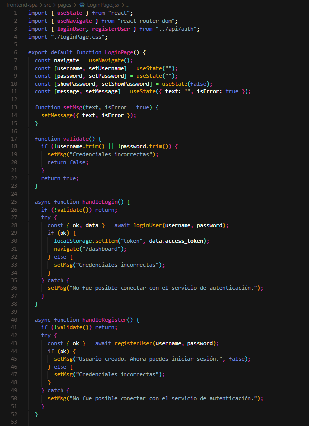
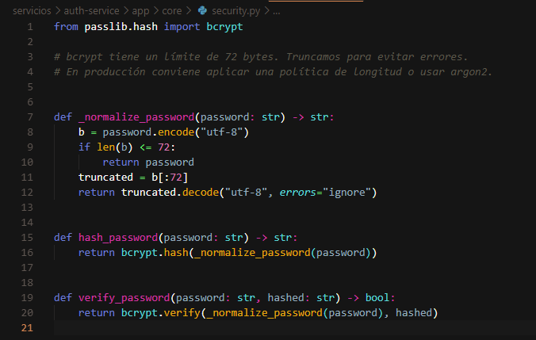
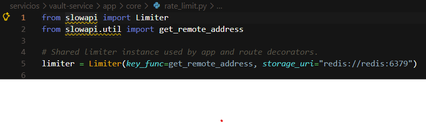
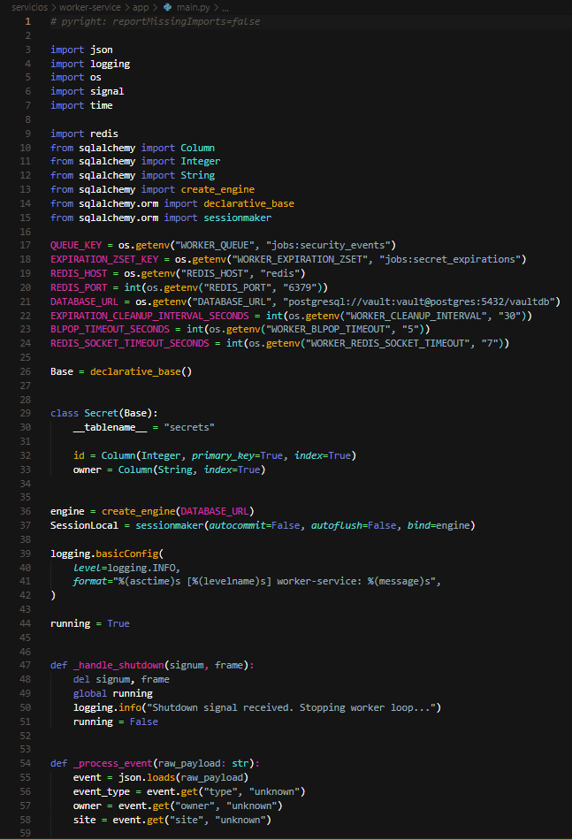
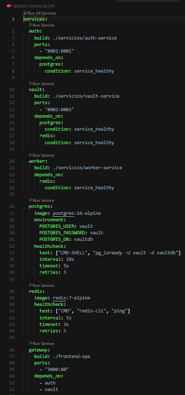
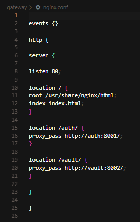
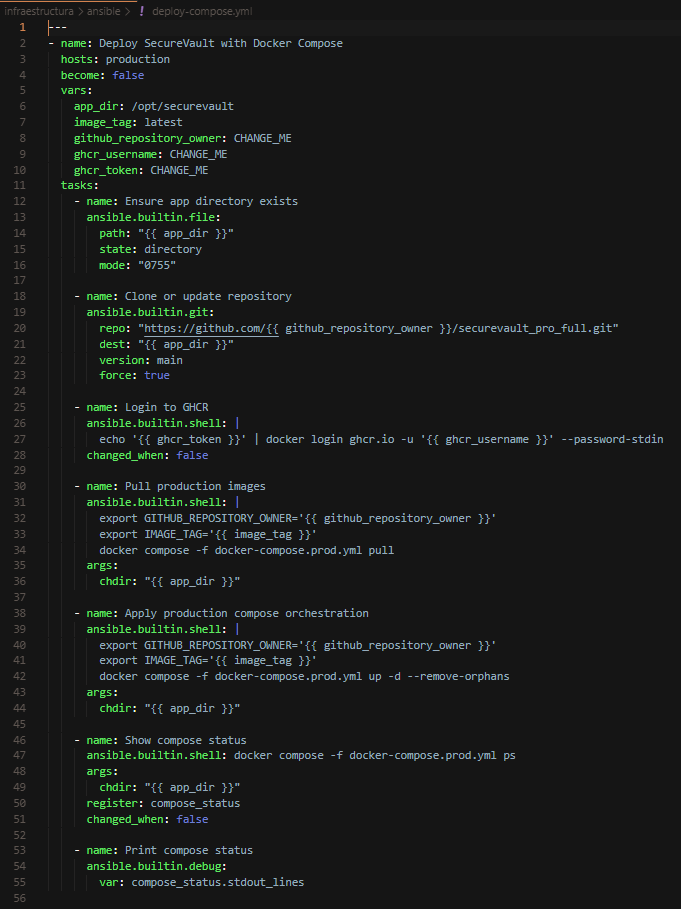
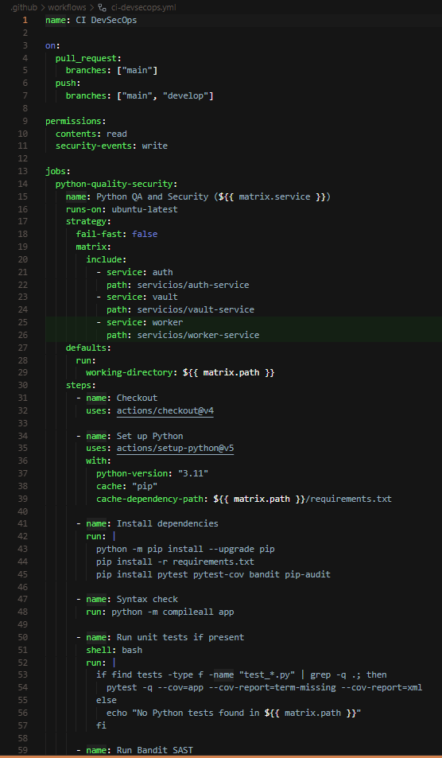
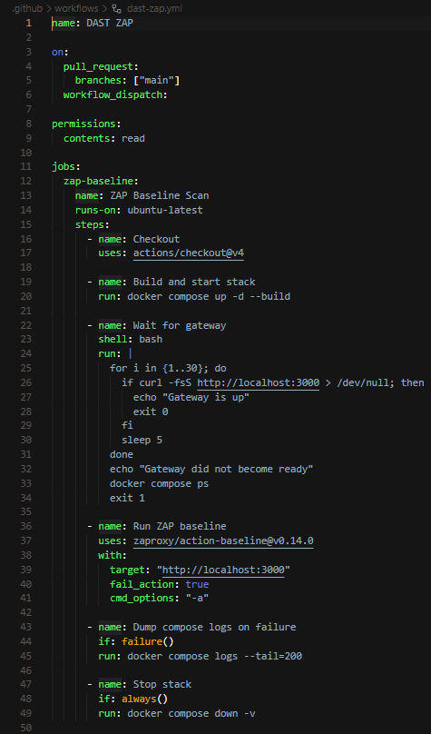
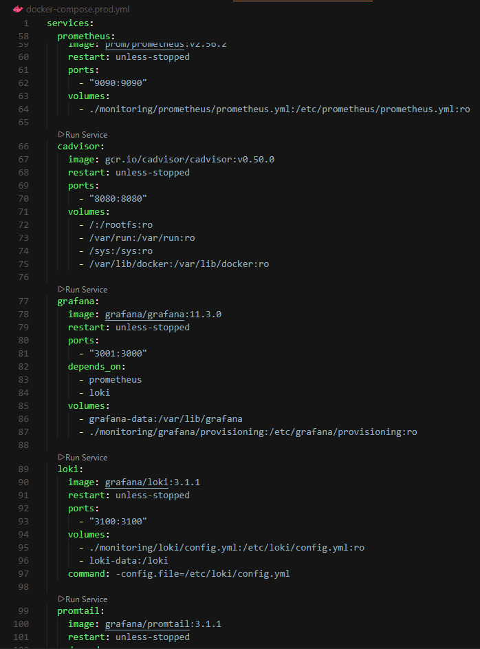
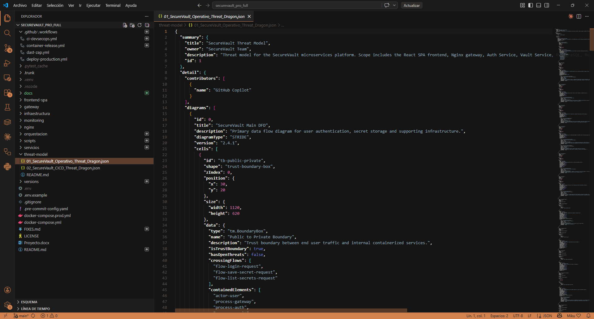
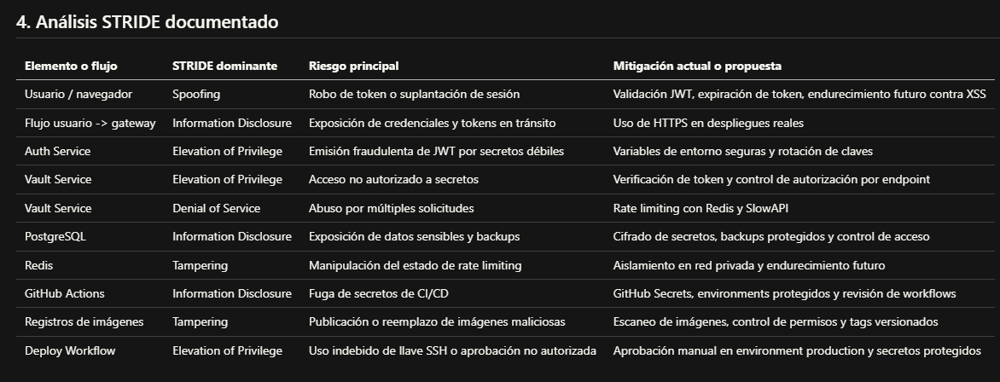
SecureVault Pro demuestra una implementacion madura para contexto academico-profesional: seguridad en capas, pipeline automatizado, escaneo de codigo/dependencias/imagenes, y monitoreo operativo continuo.
Fortalezas: - Defensa en profundidad aplicada de forma practica. - Cobertura amplia de controles DevSecOps. - Estructura modular clara y reproducible. - Documentacion alineada con evidencia tecnica.
Recomendaciones prioritarias para evolucion a produccion estricta: 1. Migrar gestion de sesion a cookies HttpOnly y reforzar CSP. 2. Habilitar TLS de extremo a extremo en todos los entornos remotos. 3. Externalizar secretos a gestor dedicado (por ejemplo, Vault/KMS). 4. Integrar alertamiento formal (correo/chat/siem) para eventos de Falco y umbrales de Prometheus. 5. Definir politica de rotacion de claves y respuesta a incidentes versionada.
| Herramienta | Tipo | Politica vigilada principal |
|---|---|---|
| Threat Dragon | Modelado de amenazas | Analisis preventivo de riesgo |
| Gitleaks/TruffleHog | Secret scanning | Prevencion de fuga de credenciales |
| Bandit/Semgrep | SAST | Codigo seguro |
| pip-audit/npm audit/Dependency-Check | SCA | Dependencias seguras |
| Hadolint | Lint de contenedor | Dockerfiles robustos |
| Trivy/Grype | Escaneo de imagenes | Artefactos libres de CVEs criticos |
| OWASP ZAP | DAST | Seguridad en ejecucion |
| Prometheus/Grafana | Observabilidad | Disponibilidad y comportamiento |
| Loki/Promtail | Logging | Trazabilidad operativa |
| Falco | Runtime security | Deteccion temprana de comportamiento anomalo |